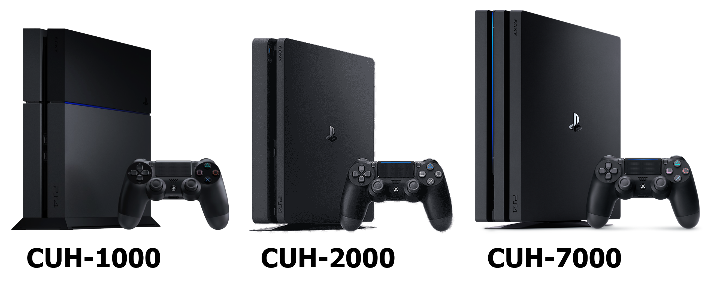
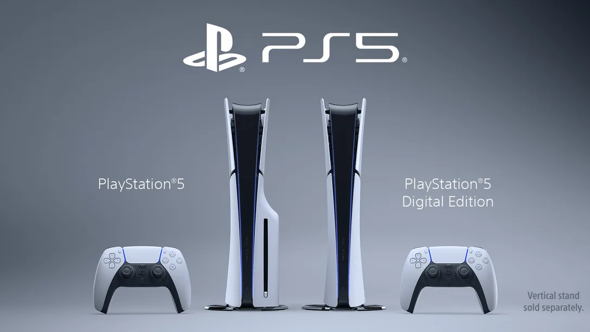
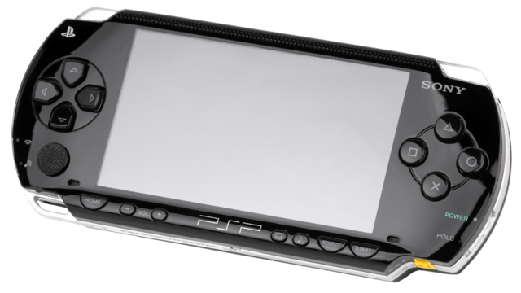
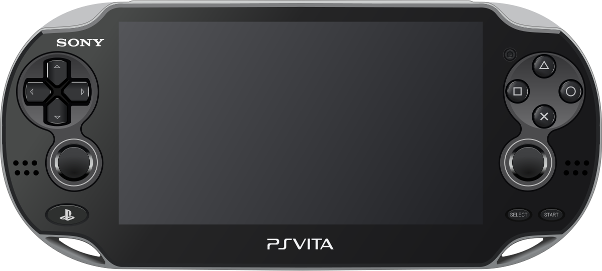

La PlayStation (oficialmente abreviada como PS1) es una videoconsola de sobremesa de 32 bits lanzada por Sony Computer Entertainment el 3 de diciembre de 1994 en Japón. La PlayStation fue la primera de la videoconsolas de la quinta generación,
y la competidora directa de la Sega Saturn y la Nintendo 64.
ConsolaPS2
La PlayStation 2 (PS2) es una consola de videojuegos de sobremesa desarrollada por Sony Computer Entertainment. Fue lanzada el 4 de marzo de 2000 en Japón. La PS2 es la consola más vendida de todos los tiempos, con más de 155 millones de unidades vendidas en todo el mundo.
ConsolaPS3
La PlayStation 3 (プレイステーション3 Pureisutēshon Surī?) es la tercera videoconsola de sobremesa producida por Sony Computer Entertainment y la sucesora de la PlayStation 2 como parte de la marca PlayStation. Fue lanzada el 11 de noviembre de 2006 en Japón, el 17 de noviembre de 2006 en Norteamérica y el 23 de marzo de 2007 en Europa y Australia.

ConsolaPS4
La PlayStation 4 (PS4) es una consola de videojuegos de sobremesa desarrollada por Sony Computer Entertainment. Fue lanzada el 15 de noviembre de 2013 en Norteamérica, el 29 de noviembre de 2013 en Europa y Australia, y el 22 de febrero de 2014 en Japón. La PS4 es la sucesora de la PlayStation 3 y compite con la Xbox One de Microsoft y la Wii U de Nintendo.

ConsolaPS5
La PlayStation 5 (PS5) es una consola de videojuegos de sobremesa desarrollada por Sony Interactive Entertainment. Fue lanzada el 12 de noviembre de 2020 en Norteamérica, Australia, Japón y Corea del Sur, y el 19 de noviembre de 2020 en el resto del mundo. La PS5 es la sucesora de la PlayStation 4 y compite con la Xbox Series X y Series S de Microsoft.
Consolas Portatil

PortatilPSP
La PlayStation Portable (PSP) es una videoconsola portátil de la multinacional japonesa Sony Computer Entertainment. Fue anunciada en la feria E3 de 2003 y su lanzamiento se produjo el 12 de diciembre de 2004 en Japón. La PSP compitió con la Nintendo DS como parte de la séptima generación de consolas.

PortatilPS-Vita
La PlayStation Vita (PS Vita) es una videoconsola portátil de la multinacional japonesa Sony Computer Entertainment. Fue anunciada el 27 de enero de 2011 y lanzada el 17 de diciembre de 2011 en Japón. La PS Vita es la sucesora de la PlayStation Portable y compitió con la Nintendo 3DS como parte de la octava generación de consolas.
Para mas informacion puede acceder a la pagina de playstation